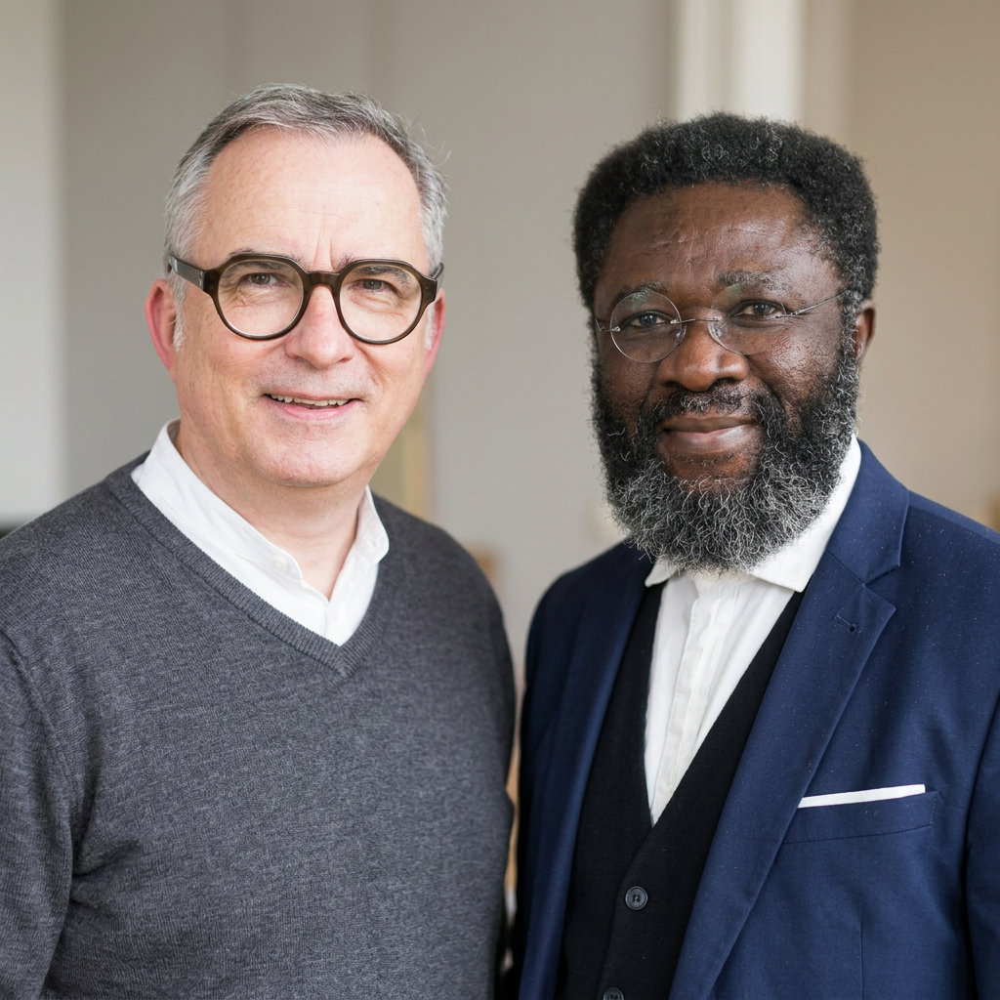
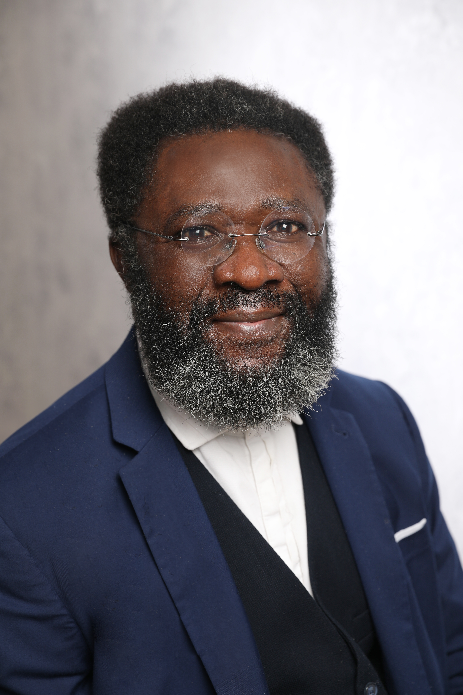

Identität
Wer bin ich jenseits meiner unternehmerischen Rolle?
Wer bin ichGeistliche Begleitung für Unternehmer
Wer trägt den Unternehmer? Michael Deck und Dr. Ogoko Callistus schaffen einen vertraulichen Raum für Unternehmer und Führungskräfte, die ihre wirtschaftliche Verantwortung nicht von ihrer persönlichen und geistlichen Existenz trennen wollen.

Unsere Grundidee
Unternehmer tragen Verantwortung – für Mitarbeiter, Familien, Kunden, Kapital, Entscheidungen und Zukunft. Doch wer trägt den Unternehmer?
Gerade Unternehmer erleben häufig eine besondere Form von Einsamkeit. Unternehmerseelsorge schafft einen Raum, in dem sie selbst nicht funktionieren müssen – weder klassische Unternehmensberatung noch Psychotherapie oder Coaching, sondern der Mensch hinter seiner Funktion. Eine jüdisch-christliche Perspektive begreift ihn dabei nicht nur als Empfänger der Schöpfung, sondern als Mitgestalter, berufen, die Welt zu bearbeiten und zu bewahren (Genesis 2,15) – auch durch unternehmerisches Handeln.
Unsere Leitfrage
Unternehmerseelsorge beginnt nicht bei der Bilanz. Sie beginnt beim Menschen. Dahinter stehen weitere Fragen:
Wer bin ich jenseits meiner unternehmerischen Rolle?
Wer bin ichWozu bin ich berufen, und warum tue ich, was ich tue?
Wozu bin ich daWas trägt mich in Krisen – und wo ist Gott in meinem Unternehmen?
Was zählt wirklichDie Lebenswelt von Unternehmern
Viele dieser Fragen lassen sich weder durch einen Steuerberater noch durch einen Unternehmensberater beantworten. Sie berühren die Seele.
Was geschieht, wenn das Unternehmen scheitert?
Was geschieht mit meinen Mitarbeitern und ihren Familien?
Bin ich noch etwas, wenn ich nicht mehr Unternehmer bin?
Wie sehr beansprucht das Unternehmen meine Ehe und meine Familie?
Was bedeutet Besitz? Wie viel ist genug?
Wie gehe ich damit um, dass andere von meinen Entscheidungen abhängig sind?
Was geschieht mit meinem Lebenswerk?
Welche Entscheidungen verfolgen mich?
Warum mache ich das alles überhaupt?
Der geistliche Kern
Eine zentrale biblische Frage lautet nicht nur „Was soll ich tun?“, sondern die Frage Gottes an Adam: „Wo bist du?“ (Genesis 3,9) Diese Frage kann zur Grundfrage der Unternehmerseelsorge werden.
Wo bist du als Mensch? Wo bist du in deinem Unternehmen? Wo bist du in deiner Familie? Wo bist du vor Gott? Und vielleicht noch tiefer: Bist du noch dort, wohin du gerufen wurdest?
Ein geistliches Modell
Unternehmerisches Handeln wird dadurch nicht vom geistlichen Leben getrennt. Es wird Teil davon.
Wer bin ich? Wozu bin ich gerufen? Was ist mir anvertraut? Wem dient mein Handeln?
Wie wir begleiten
Unternehmerseelsorge bewegt sich je nach Situation auf einer von drei Ebenen.
Persönliche Krisen, Überforderung, Einsamkeit, Familie, Sinnfragen. Hier steht nicht das Unternehmen im Mittelpunkt, sondern der Mensch.
Führung, Macht, Konflikte, schwierige Entscheidungen, Unternehmenskultur, Gerechtigkeit im Unternehmen.
Berufung, Lebensauftrag, gesellschaftliche Verantwortung, Nachfolge, Lebenswerk: Was soll durch mich in dieser Welt Wirklichkeit werden?
Mögliche Formen der Begleitung
Unternehmerseelsorge ermöglicht bewusst verschiedene Zugänge – je nach Situation und Bedarf.
Kein Networking. Kein Coaching. Ein geschützter Raum für das, was wirklich beschäftigt.
Ein entscheidender Grundsatz
Der Raum ist vertraulich – und frei von eigenen Interessen.
Wir verkaufen keine Finanzprodukte, vermitteln keine Unternehmensbeteiligungen und verfolgen keine geschäftlichen Interessen. Das schafft etwas, das im Unternehmerleben selten geworden ist: einen interessenfreien Raum.
Zwei Begleiter · unterschiedliche Perspektiven
Michael Deck und Dr. Ogoko Callistus verstehen sich bewusst nicht als „zwei Coaches“, sondern als zwei Begleiter mit unterschiedlichen Perspektiven – und genau diese Unterschiedlichkeit wird zur Stärke des gemeinsamen Angebots.

Unternehmer · geistlicher Begleiter
Michael bringt eigene Unternehmererfahrung, Unternehmensführung, geistliche Begleitung, Berufungsarbeit und jüdisch-christliche Spiritualität ein.

Ehem. Dominikanermönch · Stuttgart
Dr. Ogoko Callistus, gebürtig aus Nigeria und heute in Stuttgart zuhause, war Dominikanermönch und bringt seine eigene theologische, pastorale und kulturelle Perspektive in die gemeinsame Begleitung ein.
Unsere Positionierung
Unternehmerseelsorge ist ein vertraulicher geistlicher Begleitungsraum für Unternehmer und Führungskräfte, die ihre wirtschaftliche Verantwortung nicht von ihrer persönlichen und geistlichen Existenz trennen wollen. Schreib uns, wenn du ein Erstgespräch vereinbaren möchtest.